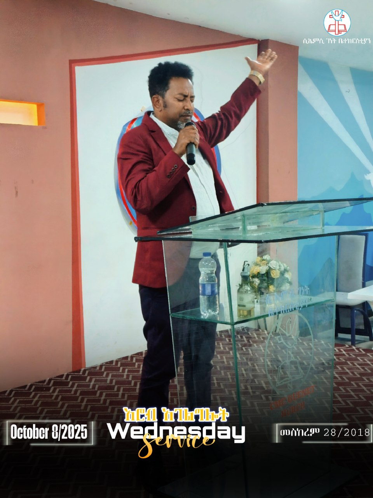
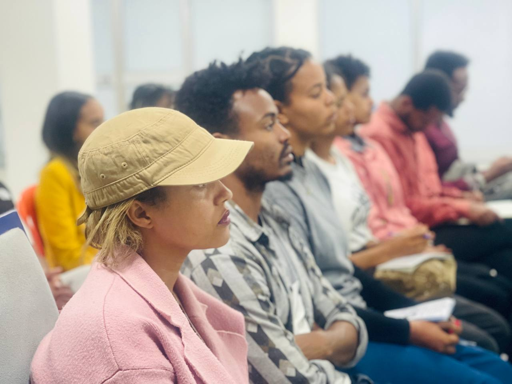
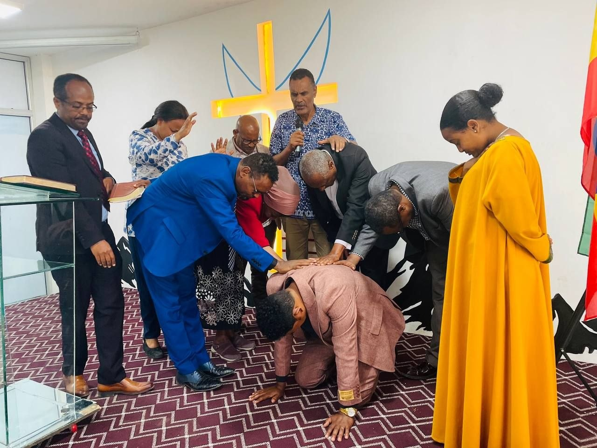
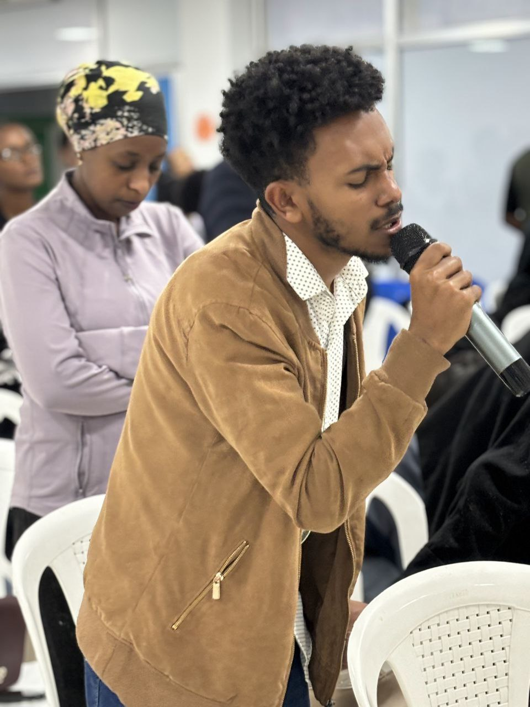

Join us every Wednesday evening for our uplifting midweek service designed to renew your spirit and strengthen your faith through worship, teaching, and prayer. The Wednesday Service is a special time for reflection, encouragement, and fellowship within the body of Christ.
Service Schedule
- Evening Worship: 5:30 PM – 2:00 PM
Wednesday Activities
- Midweek Worship and Praise
- Prayer and Intercession
- Testimonies and Spiritual Encouragement
- Fellowship and Sharing
Wednesday Service in Pictures




Contact Wednesday Service
Email: wednesdayservice@cmcgenetchurch.org
Phone: +251 919078605